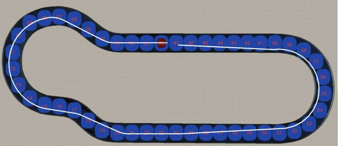

In this tutorial we going to create a controller which will be used by the car to run through the track. We try to build the controller which can help to pass the track with the best trajectory. The best means, the car should pass the track with the shortest trajectory and don't violate the track's boundaries. To achieve the best result, we should use at least 6 sensors. In the picture you can see the example trajectory which you can have:

To pass the track you may need around three controllers. They could be the following:
The most important controller is the steering one. Using different sensors to optimise the trajectory. It could be side sensors for aligning the car to the track and front car sensors to change the car angle before it reaches the turn, to achieve better trajectory. In the feature tutorials we are going to use this controller as the main one for the car.
Show the solution.